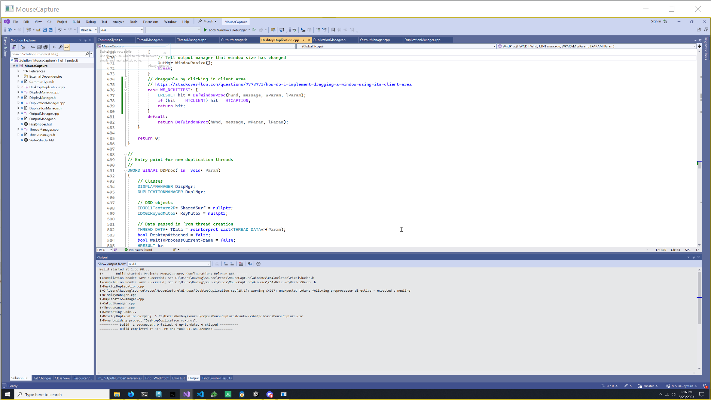

Have you ever had difficulty screensharing multiple displays while videoconferencing? Then this is the app for you!
This simple app mirrors the display your mouse is currently on, automatically switching as you use your computer. Simply share this app's window in your videoconferencing app and never manually switch screens again!
